Parcours « 01-ajout-multiple » étape 1 (goto) : HTTP 404 : GET http://localhost:3102/_vercel/speed-insights/script.js ; console.error : Failed to load resource: the server responded with a status of 404 (Not Found) ; console.error : Refused to execute script from 'http://localhost:3102/_vercel/speed-insights/script.js' because its MIME type ('text/plain') is not executable, and strict MIME type checking is enabled. ; requête échouée : GET http://localhost:3102/_vercel/speed-insights/script.js (net::ERR_ABORTED) ; requête échouée : GET http://localhost:3102/notes?_rsc=6kCI21yaTlYMipMB (net::ERR_ABORTED) ; requête échouée : GET http://localhost:3102/nutrition?_rsc=oyVt-Ax8zMpCuAam (net::ERR_ABORTED)
Parcours « 01-ajout-multiple » étape 13 (reload) : HTTP 404 : GET http://localhost:3102/_vercel/speed-insights/script.js ; console.error : Failed to load resource: the server responded with a status of 404 (Not Found) ; console.error : Refused to execute script from 'http://localhost:3102/_vercel/speed-insights/script.js' because its MIME type ('text/html') is not executable, and strict MIME type checking is enabled. ; requête échouée : GET http://localhost:3102/_vercel/speed-insights/script.js (net::ERR_ABORTED) ; requête échouée : GET http://localhost:3102/notes?_rsc=6kCI21yaTlYMipMB (net::ERR_ABORTED)
Parcours « 02-cocher-decocher » étape 1 (goto) : HTTP 404 : GET http://localhost:3102/_vercel/speed-insights/script.js ; console.error : Failed to load resource: the server responded with a status of 404 (Not Found) ; console.error : Refused to execute script from 'http://localhost:3102/_vercel/speed-insights/script.js' because its MIME type ('text/plain') is not executable, and strict MIME type checking is enabled. ; requête échouée : GET http://localhost:3102/_vercel/speed-insights/script.js (net::ERR_ABORTED) ; requête échouée : GET http://localhost:3102/notes?_rsc=6kCI21yaTlYMipMB (net::ERR_ABORTED) ; requête échouée : GET http://localhost:3102/nutrition?_rsc=oyVt-Ax8zMpCuAam (net::ERR_ABORTED)
Parcours « 02-cocher-decocher » étape 8 (reload) : HTTP 404 : GET http://localhost:3102/_vercel/speed-insights/script.js ; console.error : Failed to load resource: the server responded with a status of 404 (Not Found) ; console.error : Refused to execute script from 'http://localhost:3102/_vercel/speed-insights/script.js' because its MIME type ('text/html') is not executable, and strict MIME type checking is enabled. ; requête échouée : GET http://localhost:3102/_vercel/speed-insights/script.js (net::ERR_ABORTED) ; requête échouée : GET http://localhost:3102/nutrition?_rsc=oyVt-Ax8zMpCuAam (net::ERR_ABORTED)
Parcours « 02-cocher-decocher » étape 16 (wait) : requête échouée : GET http://localhost:3102/notes?_rsc=gFW0MxFV8ywPcvsL (net::ERR_ABORTED) ; requête échouée : GET http://localhost:3102/notes?_rsc=gFW0MxFV8ywPcvsL (net::ERR_ABORTED) ; requête échouée : POST http://localhost:3102/courses (net::ERR_ABORTED) ; requête échouée : POST http://localhost:3102/courses (net::ERR_ABORTED)
Parcours « 02-cocher-decocher » étape 18 (reload) : HTTP 404 : GET http://localhost:3102/_vercel/speed-insights/script.js ; console.error : Failed to load resource: the server responded with a status of 404 (Not Found) ; console.error : Refused to execute script from 'http://localhost:3102/_vercel/speed-insights/script.js' because its MIME type ('text/html') is not executable, and strict MIME type checking is enabled. ; requête échouée : GET http://localhost:3102/_vercel/speed-insights/script.js (net::ERR_ABORTED) ; requête échouée : GET http://localhost:3102/notes?_rsc=6kCI21yaTlYMipMB (net::ERR_ABORTED) ; requête échouée : GET http://localhost:3102/nutrition?_rsc=oyVt-Ax8zMpCuAam (net::ERR_ABORTED)
Parcours « 03-supprimer-annuler » étape 1 (goto) : HTTP 404 : GET http://localhost:3102/_vercel/speed-insights/script.js ; console.error : Failed to load resource: the server responded with a status of 404 (Not Found) ; console.error : Refused to execute script from 'http://localhost:3102/_vercel/speed-insights/script.js' because its MIME type ('text/plain') is not executable, and strict MIME type checking is enabled. ; requête échouée : GET http://localhost:3102/_vercel/speed-insights/script.js (net::ERR_ABORTED) ; requête échouée : GET http://localhost:3102/notes?_rsc=6kCI21yaTlYMipMB (net::ERR_ABORTED) ; requête échouée : GET http://localhost:3102/nutrition?_rsc=oyVt-Ax8zMpCuAam (net::ERR_ABORTED)
Parcours « 03-supprimer-annuler » étape 6 (wait) : requête échouée : GET http://localhost:3102/notes?_rsc=gFW0MxFV8ywPcvsL (net::ERR_ABORTED) ; requête échouée : POST http://localhost:3102/courses (net::ERR_ABORTED) ; requête échouée : POST http://localhost:3102/courses (net::ERR_ABORTED)
Parcours « 03-supprimer-annuler » étape 9 (reload) : HTTP 404 : GET http://localhost:3102/_vercel/speed-insights/script.js ; console.error : Failed to load resource: the server responded with a status of 404 (Not Found) ; console.error : Refused to execute script from 'http://localhost:3102/_vercel/speed-insights/script.js' because its MIME type ('text/html') is not executable, and strict MIME type checking is enabled. ; requête échouée : GET http://localhost:3102/_vercel/speed-insights/script.js (net::ERR_ABORTED) ; requête échouée : GET http://localhost:3102/nutrition?_rsc=oyVt-Ax8zMpCuAam (net::ERR_ABORTED)
Parcours « 03-supprimer-annuler » étape 13 (reload) : requête échouée : GET http://localhost:3102/notes?_rsc=6kCI21yaTlYMipMB (net::ERR_ABORTED) ; requête échouée : GET http://localhost:3102/nutrition?_rsc=oyVt-Ax8zMpCuAam (net::ERR_ABORTED) ; HTTP 404 : GET http://localhost:3102/_vercel/speed-insights/script.js ; console.error : Failed to load resource: the server responded with a status of 404 (Not Found) ; console.error : Refused to execute script from 'http://localhost:3102/_vercel/speed-insights/script.js' because its MIME type ('text/html') is not executable, and strict MIME type checking is enabled. ; requête échouée : GET http://localhost:3102/_vercel/speed-insights/script.js (net::ERR_ABORTED)
Parcours « 04-supprimer-pris-sombre » étape 1 (goto) : HTTP 404 : GET http://localhost:3102/_vercel/speed-insights/script.js ; console.error : Failed to load resource: the server responded with a status of 404 (Not Found) ; console.error : Refused to execute script from 'http://localhost:3102/_vercel/speed-insights/script.js' because its MIME type ('text/plain') is not executable, and strict MIME type checking is enabled. ; requête échouée : GET http://localhost:3102/_vercel/speed-insights/script.js (net::ERR_ABORTED) ; requête échouée : GET http://localhost:3102/nutrition?_rsc=oyVt-Ax8zMpCuAam (net::ERR_ABORTED)
Parcours « 04-supprimer-pris-sombre » étape 6 (wait) : requête échouée : GET http://localhost:3102/notes?_rsc=gFW0MxFV8ywPcvsL (net::ERR_ABORTED) ; requête échouée : POST http://localhost:3102/courses (net::ERR_ABORTED) ; requête échouée : POST http://localhost:3102/courses (net::ERR_ABORTED)
Parcours « 04-supprimer-pris-sombre » étape 9 (wait) : requête échouée : GET http://localhost:3102/notes?_rsc=gFW0MxFV8ywPcvsL (net::ERR_ABORTED) ; requête échouée : POST http://localhost:3102/courses (net::ERR_ABORTED) ; requête échouée : POST http://localhost:3102/courses (net::ERR_ABORTED)
Parcours « 04-supprimer-pris-sombre » étape 11 (reload) : HTTP 404 : GET http://localhost:3102/_vercel/speed-insights/script.js ; console.error : Failed to load resource: the server responded with a status of 404 (Not Found) ; console.error : Refused to execute script from 'http://localhost:3102/_vercel/speed-insights/script.js' because its MIME type ('text/html') is not executable, and strict MIME type checking is enabled. ; requête échouée : GET http://localhost:3102/_vercel/speed-insights/script.js (net::ERR_ABORTED)
Parcours « 04-supprimer-pris-sombre » étape 14 (wait) : requête échouée : GET http://localhost:3102/notes?_rsc=gFW0MxFV8ywPcvsL (net::ERR_ABORTED) ; requête échouée : POST http://localhost:3102/courses (net::ERR_ABORTED) ; requête échouée : POST http://localhost:3102/courses (net::ERR_ABORTED)
Parcours « 04-supprimer-pris-sombre » étape 15 (reload) : requête échouée : GET http://localhost:3102/notes?_rsc=6kCI21yaTlYMipMB (net::ERR_ABORTED) ; requête échouée : GET http://localhost:3102/nutrition?_rsc=oyVt-Ax8zMpCuAam (net::ERR_ABORTED) ; HTTP 404 : GET http://localhost:3102/_vercel/speed-insights/script.js ; console.error : Failed to load resource: the server responded with a status of 404 (Not Found) ; console.error : Refused to execute script from 'http://localhost:3102/_vercel/speed-insights/script.js' because its MIME type ('text/html') is not executable, and strict MIME type checking is enabled. ; requête échouée : GET http://localhost:3102/_vercel/speed-insights/script.js (net::ERR_ABORTED)
Parcours « 05-limites-sombre » étape 1 (goto) : HTTP 404 : GET http://localhost:3102/_vercel/speed-insights/script.js ; console.error : Failed to load resource: the server responded with a status of 404 (Not Found) ; console.error : Refused to execute script from 'http://localhost:3102/_vercel/speed-insights/script.js' because its MIME type ('text/plain') is not executable, and strict MIME type checking is enabled. ; requête échouée : GET http://localhost:3102/_vercel/speed-insights/script.js (net::ERR_ABORTED) ; requête échouée : GET http://localhost:3102/notes?_rsc=6kCI21yaTlYMipMB (net::ERR_ABORTED)
Parcours « 06-renommer » étape 1 (goto) : HTTP 404 : GET http://localhost:3102/_vercel/speed-insights/script.js ; console.error : Failed to load resource: the server responded with a status of 404 (Not Found) ; console.error : Refused to execute script from 'http://localhost:3102/_vercel/speed-insights/script.js' because its MIME type ('text/plain') is not executable, and strict MIME type checking is enabled. ; requête échouée : GET http://localhost:3102/_vercel/speed-insights/script.js (net::ERR_ABORTED) ; requête échouée : GET http://localhost:3102/notes?_rsc=6kCI21yaTlYMipMB (net::ERR_ABORTED) ; requête échouée : GET http://localhost:3102/nutrition?_rsc=oyVt-Ax8zMpCuAam (net::ERR_ABORTED)
Parcours « 06-renommer » étape 5 (wait) : requête échouée : GET http://localhost:3102/notes?_rsc=gFW0MxFV8ywPcvsL (net::ERR_ABORTED) ; requête échouée : POST http://localhost:3102/courses (net::ERR_ABORTED) ; requête échouée : POST http://localhost:3102/courses (net::ERR_ABORTED)
Parcours « 06-renommer » étape 15 (wait) : requête échouée : GET http://localhost:3102/notes?_rsc=gFW0MxFV8ywPcvsL (net::ERR_ABORTED) ; requête échouée : POST http://localhost:3102/courses (net::ERR_ABORTED) ; requête échouée : POST http://localhost:3102/courses (net::ERR_ABORTED)
Parcours « 06-renommer » étape 22 (reload) : HTTP 404 : GET http://localhost:3102/_vercel/speed-insights/script.js ; console.error : Failed to load resource: the server responded with a status of 404 (Not Found) ; console.error : Refused to execute script from 'http://localhost:3102/_vercel/speed-insights/script.js' because its MIME type ('text/html') is not executable, and strict MIME type checking is enabled. ; requête échouée : GET http://localhost:3102/_vercel/speed-insights/script.js (net::ERR_ABORTED) ; requête échouée : GET http://localhost:3102/notes?_rsc=6kCI21yaTlYMipMB (net::ERR_ABORTED) ; requête échouée : GET http://localhost:3102/nutrition?_rsc=oyVt-Ax8zMpCuAam (net::ERR_ABORTED)
Parcours « 07-liste-vide » étape 1 (goto) : HTTP 404 : GET http://localhost:3102/_vercel/speed-insights/script.js ; console.error : Failed to load resource: the server responded with a status of 404 (Not Found) ; console.error : Refused to execute script from 'http://localhost:3102/_vercel/speed-insights/script.js' because its MIME type ('text/plain') is not executable, and strict MIME type checking is enabled. ; requête échouée : GET http://localhost:3102/_vercel/speed-insights/script.js (net::ERR_ABORTED) ; requête échouée : GET http://localhost:3102/notes?_rsc=6kCI21yaTlYMipMB (net::ERR_ABORTED) ; requête échouée : GET http://localhost:3102/nutrition?_rsc=oyVt-Ax8zMpCuAam (net::ERR_ABORTED)
Parcours « 07-liste-vide » étape 3 (reload) : HTTP 404 : GET http://localhost:3102/_vercel/speed-insights/script.js ; console.error : Failed to load resource: the server responded with a status of 404 (Not Found) ; console.error : Refused to execute script from 'http://localhost:3102/_vercel/speed-insights/script.js' because its MIME type ('text/html') is not executable, and strict MIME type checking is enabled. ; requête échouée : GET http://localhost:3102/_vercel/speed-insights/script.js (net::ERR_ABORTED) ; requête échouée : GET http://localhost:3102/notes?_rsc=6kCI21yaTlYMipMB (net::ERR_ABORTED)
Parcours « 07-liste-vide » étape 24 (reload) : HTTP 404 : GET http://localhost:3102/_vercel/speed-insights/script.js ; console.error : Failed to load resource: the server responded with a status of 404 (Not Found) ; console.error : Refused to execute script from 'http://localhost:3102/_vercel/speed-insights/script.js' because its MIME type ('text/html') is not executable, and strict MIME type checking is enabled. ; requête échouée : GET http://localhost:3102/_vercel/speed-insights/script.js (net::ERR_ABORTED) ; requête échouée : GET http://localhost:3102/notes?_rsc=6kCI21yaTlYMipMB (net::ERR_ABORTED) ; requête échouée : GET http://localhost:3102/nutrition?_rsc=oyVt-Ax8zMpCuAam (net::ERR_ABORTED)
Écrans au repos (1)
/courses · clair · HTTP 200
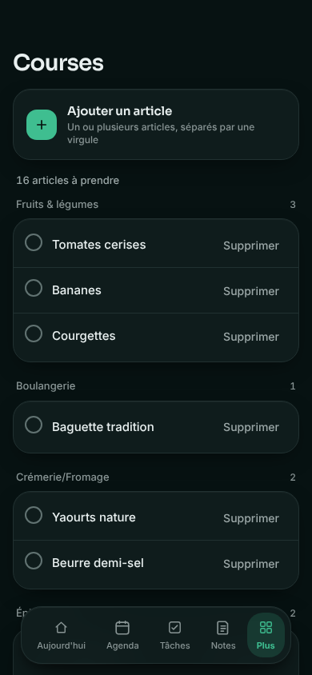
/courses · sombre · HTTP 200
Usage réel (7 parcours)
01-ajout-multiple
1. goto ouvrir Courses — anomalie ⚠ HTTP 404 : GET http://localhost:3102/_vercel/speed-insights/script.js ⚠ console.error : Failed to load resource: the server responded with a status of 404 (Not Found) ⚠ console.error : Refused to execute script from 'http://localhost:3102/_vercel/speed-insights/script.js' because its MIME type ('text/plain') is not executable, and strict MIME type checking is enabled. ⚠ requête échouée : GET http://localhost:3102/_vercel/speed-insights/script.js (net::ERR_ABORTED) ⚠ requête échouée : GET http://localhost:3102/notes?_rsc=6kCI21yaTlYMipMB (net::ERR_ABORTED) ⚠ requête échouée : GET http://localhost:3102/nutrition?_rsc=oyVt-Ax8zMpCuAam (net::ERR_ABORTED)
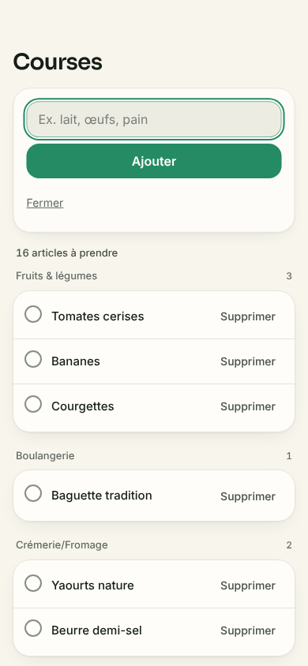
2. click ouvrir la carte d'ajout — ok
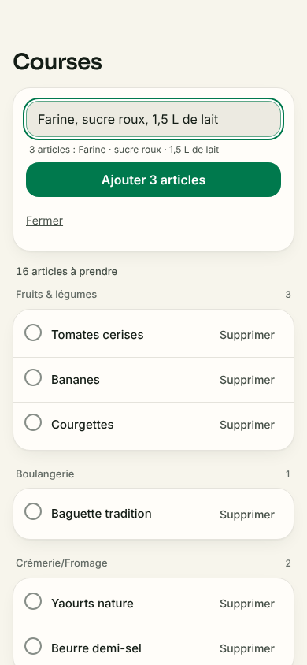
3. fill saisie multiple avec virgule décimale — ok
9. wait http://localhost:3102/courses — anomalie ⚠ requête échouée : POST http://localhost:3102/courses (net::ERR_ABORTED) ⚠ requête échouée : POST http://localhost:3102/courses (net::ERR_ABORTED)
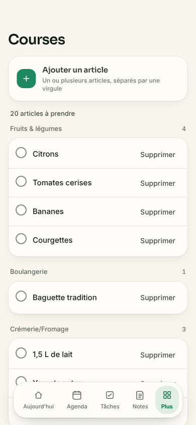
10. click refermer la carte — anomalie ⚠ requête échouée : GET http://localhost:3102/notes?_rsc=6kCI21yaTlYMipMB (net::ERR_ABORTED)11. wait http://localhost:3102/courses — ok
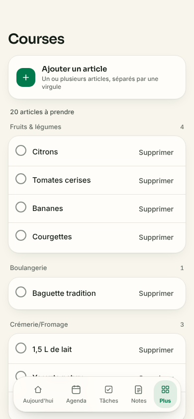
12. expect_text http://localhost:3102/courses — ok13. reload persistance — anomalie ⚠ HTTP 404 : GET http://localhost:3102/_vercel/speed-insights/script.js ⚠ console.error : Failed to load resource: the server responded with a status of 404 (Not Found) ⚠ console.error : Refused to execute script from 'http://localhost:3102/_vercel/speed-insights/script.js' because its MIME type ('text/html') is not executable, and strict MIME type checking is enabled. ⚠ requête échouée : GET http://localhost:3102/_vercel/speed-insights/script.js (net::ERR_ABORTED) ⚠ requête échouée : GET http://localhost:3102/notes?_rsc=6kCI21yaTlYMipMB (net::ERR_ABORTED)14. expect_text http://localhost:3102/courses — ok15. expect_text http://localhost:3102/courses — ok16. expect_text http://localhost:3102/courses — ok
02-cocher-decocher
1. goto http://localhost:3102/courses — anomalie ⚠ HTTP 404 : GET http://localhost:3102/_vercel/speed-insights/script.js ⚠ console.error : Failed to load resource: the server responded with a status of 404 (Not Found) ⚠ console.error : Refused to execute script from 'http://localhost:3102/_vercel/speed-insights/script.js' because its MIME type ('text/plain') is not executable, and strict MIME type checking is enabled. ⚠ requête échouée : GET http://localhost:3102/_vercel/speed-insights/script.js (net::ERR_ABORTED) ⚠ requête échouée : GET http://localhost:3102/notes?_rsc=6kCI21yaTlYMipMB (net::ERR_ABORTED) ⚠ requête échouée : GET http://localhost:3102/nutrition?_rsc=oyVt-Ax8zMpCuAam (net::ERR_ABORTED)
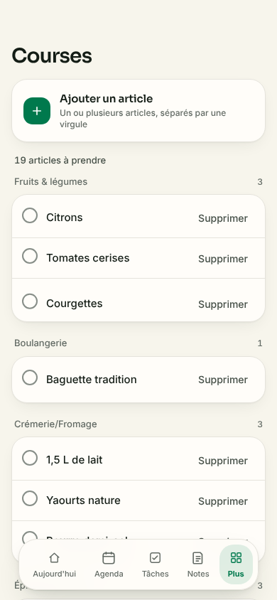
2. click cocher Bananes (pris) — ok
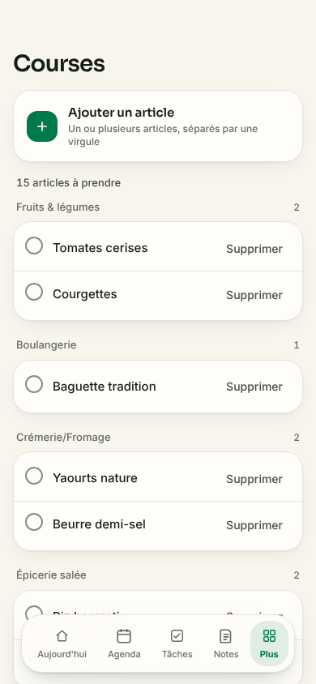
3. wait http://localhost:3102/courses — anomalie ⚠ requête échouée : GET http://localhost:3102/notes?_rsc=gFW0MxFV8ywPcvsL (net::ERR_ABORTED)4. expect_text http://localhost:3102/courses — ok
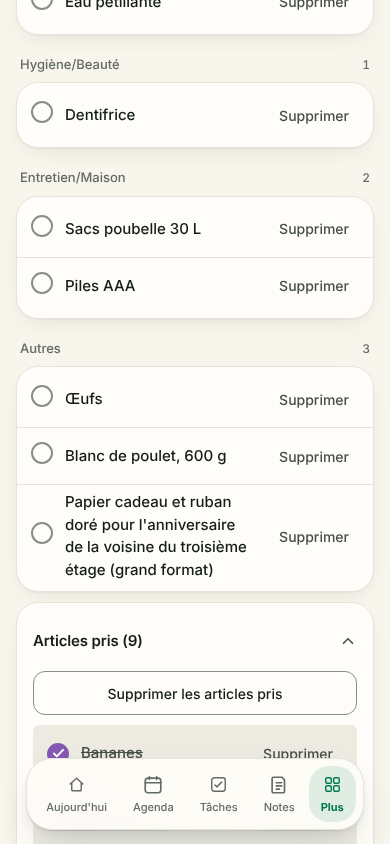
5. click déplier Articles pris — ok6. wait http://localhost:3102/courses — ok7. screenshot section dépliée — ok8. reload persistance de la coche — anomalie ⚠ HTTP 404 : GET http://localhost:3102/_vercel/speed-insights/script.js ⚠ console.error : Failed to load resource: the server responded with a status of 404 (Not Found) ⚠ console.error : Refused to execute script from 'http://localhost:3102/_vercel/speed-insights/script.js' because its MIME type ('text/html') is not executable, and strict MIME type checking is enabled. ⚠ requête échouée : GET http://localhost:3102/_vercel/speed-insights/script.js (net::ERR_ABORTED) ⚠ requête échouée : GET http://localhost:3102/nutrition?_rsc=oyVt-Ax8zMpCuAam (net::ERR_ABORTED)9. expect_text http://localhost:3102/courses — ok10. click role=button[name=/^Articles pris/] — ok11. wait http://localhost:3102/courses — ok
14. expect_text http://localhost:3102/courses — ok15. dblclick double clic sur la coche — ok16. wait http://localhost:3102/courses — anomalie ⚠ requête échouée : GET http://localhost:3102/notes?_rsc=gFW0MxFV8ywPcvsL (net::ERR_ABORTED) ⚠ requête échouée : GET http://localhost:3102/notes?_rsc=gFW0MxFV8ywPcvsL (net::ERR_ABORTED) ⚠ requête échouée : POST http://localhost:3102/courses (net::ERR_ABORTED) ⚠ requête échouée : POST http://localhost:3102/courses (net::ERR_ABORTED)17. screenshot état après double clic — ok18. reload http://localhost:3102/courses — anomalie ⚠ HTTP 404 : GET http://localhost:3102/_vercel/speed-insights/script.js ⚠ console.error : Failed to load resource: the server responded with a status of 404 (Not Found) ⚠ console.error : Refused to execute script from 'http://localhost:3102/_vercel/speed-insights/script.js' because its MIME type ('text/html') is not executable, and strict MIME type checking is enabled. ⚠ requête échouée : GET http://localhost:3102/_vercel/speed-insights/script.js (net::ERR_ABORTED) ⚠ requête échouée : GET http://localhost:3102/notes?_rsc=6kCI21yaTlYMipMB (net::ERR_ABORTED) ⚠ requête échouée : GET http://localhost:3102/nutrition?_rsc=oyVt-Ax8zMpCuAam (net::ERR_ABORTED)19. screenshot état serveur après double clic — ok
03-supprimer-annuler
1. goto http://localhost:3102/courses — anomalie ⚠ HTTP 404 : GET http://localhost:3102/_vercel/speed-insights/script.js ⚠ console.error : Failed to load resource: the server responded with a status of 404 (Not Found) ⚠ console.error : Refused to execute script from 'http://localhost:3102/_vercel/speed-insights/script.js' because its MIME type ('text/plain') is not executable, and strict MIME type checking is enabled. ⚠ requête échouée : GET http://localhost:3102/_vercel/speed-insights/script.js (net::ERR_ABORTED) ⚠ requête échouée : GET http://localhost:3102/notes?_rsc=6kCI21yaTlYMipMB (net::ERR_ABORTED) ⚠ requête échouée : GET http://localhost:3102/nutrition?_rsc=oyVt-Ax8zMpCuAam (net::ERR_ABORTED)
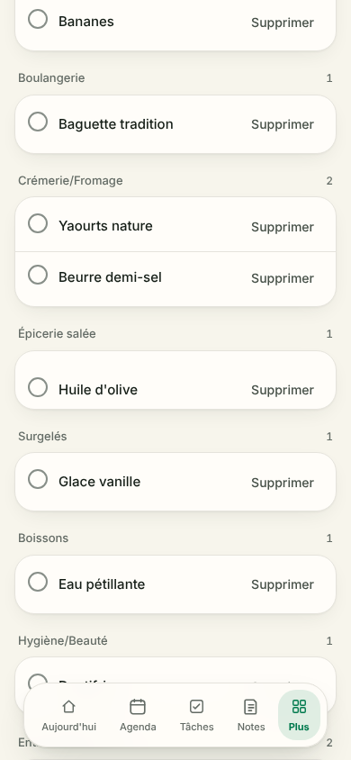
2. click supprimer un article — ok
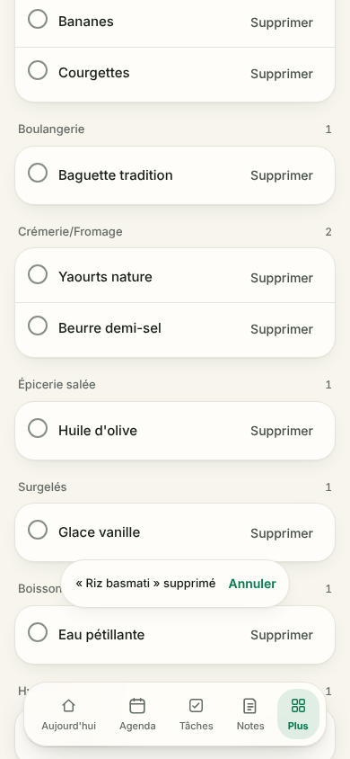
3. wait http://localhost:3102/courses — anomalie ⚠ requête échouée : GET http://localhost:3102/notes?_rsc=gFW0MxFV8ywPcvsL (net::ERR_ABORTED) ⚠ requête échouée : POST http://localhost:3102/courses (net::ERR_ABORTED)4. screenshot toast Annuler — ok5. click Annuler — ok
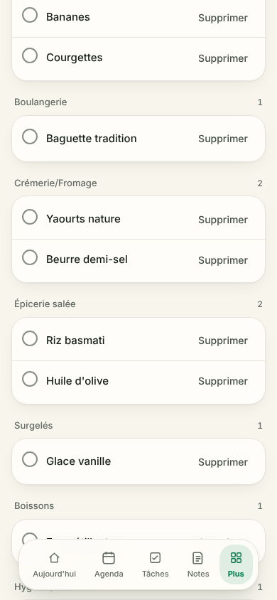
6. wait http://localhost:3102/courses — anomalie ⚠ requête échouée : GET http://localhost:3102/notes?_rsc=gFW0MxFV8ywPcvsL (net::ERR_ABORTED) ⚠ requête échouée : POST http://localhost:3102/courses (net::ERR_ABORTED) ⚠ requête échouée : POST http://localhost:3102/courses (net::ERR_ABORTED)7. expect_text http://localhost:3102/courses — ok8. expect_text http://localhost:3102/courses — ok9. reload l'article restauré persiste — anomalie ⚠ HTTP 404 : GET http://localhost:3102/_vercel/speed-insights/script.js ⚠ console.error : Failed to load resource: the server responded with a status of 404 (Not Found) ⚠ console.error : Refused to execute script from 'http://localhost:3102/_vercel/speed-insights/script.js' because its MIME type ('text/html') is not executable, and strict MIME type checking is enabled. ⚠ requête échouée : GET http://localhost:3102/_vercel/speed-insights/script.js (net::ERR_ABORTED) ⚠ requête échouée : GET http://localhost:3102/nutrition?_rsc=oyVt-Ax8zMpCuAam (net::ERR_ABORTED)
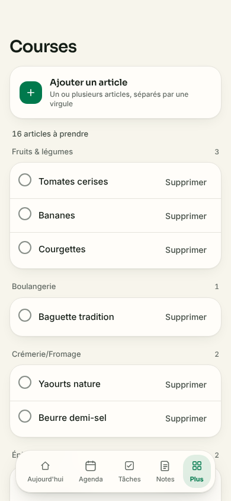
10. expect_text http://localhost:3102/courses — ok11. click supprimer sans annuler — ok
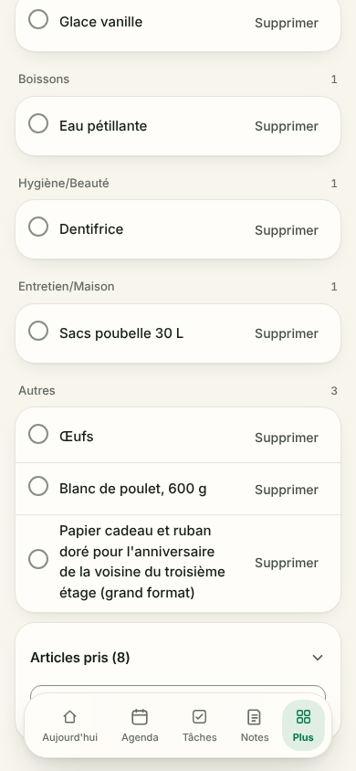
12. wait laisser le toast expirer — anomalie ⚠ requête échouée : GET http://localhost:3102/notes?_rsc=gFW0MxFV8ywPcvsL (net::ERR_ABORTED) ⚠ requête échouée : POST http://localhost:3102/courses (net::ERR_ABORTED)13. reload http://localhost:3102/courses — anomalie ⚠ requête échouée : GET http://localhost:3102/notes?_rsc=6kCI21yaTlYMipMB (net::ERR_ABORTED) ⚠ requête échouée : GET http://localhost:3102/nutrition?_rsc=oyVt-Ax8zMpCuAam (net::ERR_ABORTED) ⚠ HTTP 404 : GET http://localhost:3102/_vercel/speed-insights/script.js ⚠ console.error : Failed to load resource: the server responded with a status of 404 (Not Found) ⚠ console.error : Refused to execute script from 'http://localhost:3102/_vercel/speed-insights/script.js' because its MIME type ('text/html') is not executable, and strict MIME type checking is enabled. ⚠ requête échouée : GET http://localhost:3102/_vercel/speed-insights/script.js (net::ERR_ABORTED)14. expect_absent http://localhost:3102/courses — ok15. expect_text http://localhost:3102/courses — ok
04-supprimer-pris-sombre
1. goto http://localhost:3102/courses — anomalie ⚠ HTTP 404 : GET http://localhost:3102/_vercel/speed-insights/script.js ⚠ console.error : Failed to load resource: the server responded with a status of 404 (Not Found) ⚠ console.error : Refused to execute script from 'http://localhost:3102/_vercel/speed-insights/script.js' because its MIME type ('text/plain') is not executable, and strict MIME type checking is enabled. ⚠ requête échouée : GET http://localhost:3102/_vercel/speed-insights/script.js (net::ERR_ABORTED) ⚠ requête échouée : GET http://localhost:3102/nutrition?_rsc=oyVt-Ax8zMpCuAam (net::ERR_ABORTED)
6. wait http://localhost:3102/courses — anomalie ⚠ requête échouée : GET http://localhost:3102/notes?_rsc=gFW0MxFV8ywPcvsL (net::ERR_ABORTED) ⚠ requête échouée : POST http://localhost:3102/courses (net::ERR_ABORTED) ⚠ requête échouée : POST http://localhost:3102/courses (net::ERR_ABORTED)7. screenshot toast 8 articles supprimés — ok
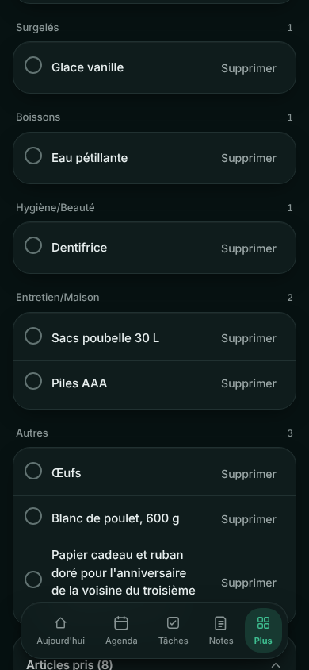
8. click Annuler — ok9. wait http://localhost:3102/courses — anomalie ⚠ requête échouée : GET http://localhost:3102/notes?_rsc=gFW0MxFV8ywPcvsL (net::ERR_ABORTED) ⚠ requête échouée : POST http://localhost:3102/courses (net::ERR_ABORTED) ⚠ requête échouée : POST http://localhost:3102/courses (net::ERR_ABORTED)10. expect_text http://localhost:3102/courses — ok11. reload http://localhost:3102/courses — anomalie ⚠ HTTP 404 : GET http://localhost:3102/_vercel/speed-insights/script.js ⚠ console.error : Failed to load resource: the server responded with a status of 404 (Not Found) ⚠ console.error : Refused to execute script from 'http://localhost:3102/_vercel/speed-insights/script.js' because its MIME type ('text/html') is not executable, and strict MIME type checking is enabled. ⚠ requête échouée : GET http://localhost:3102/_vercel/speed-insights/script.js (net::ERR_ABORTED)12. expect_text http://localhost:3102/courses — ok
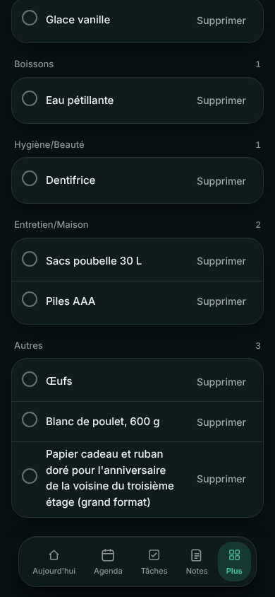
13. click vider pour de bon — ok14. wait http://localhost:3102/courses — anomalie ⚠ requête échouée : GET http://localhost:3102/notes?_rsc=gFW0MxFV8ywPcvsL (net::ERR_ABORTED) ⚠ requête échouée : POST http://localhost:3102/courses (net::ERR_ABORTED) ⚠ requête échouée : POST http://localhost:3102/courses (net::ERR_ABORTED)
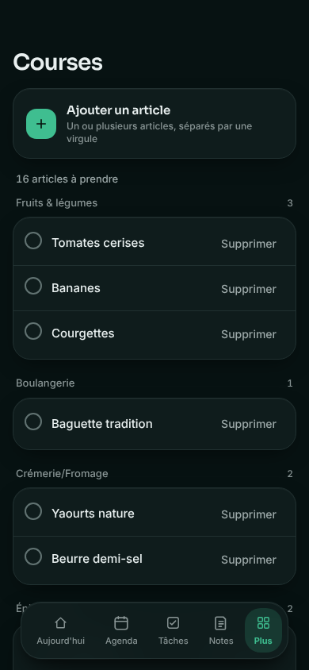
15. reload http://localhost:3102/courses — anomalie ⚠ requête échouée : GET http://localhost:3102/notes?_rsc=6kCI21yaTlYMipMB (net::ERR_ABORTED) ⚠ requête échouée : GET http://localhost:3102/nutrition?_rsc=oyVt-Ax8zMpCuAam (net::ERR_ABORTED) ⚠ HTTP 404 : GET http://localhost:3102/_vercel/speed-insights/script.js ⚠ console.error : Failed to load resource: the server responded with a status of 404 (Not Found) ⚠ console.error : Refused to execute script from 'http://localhost:3102/_vercel/speed-insights/script.js' because its MIME type ('text/html') is not executable, and strict MIME type checking is enabled. ⚠ requête échouée : GET http://localhost:3102/_vercel/speed-insights/script.js (net::ERR_ABORTED)16. expect_absent http://localhost:3102/courses — ok
05-limites-sombre
1. goto http://localhost:3102/courses — anomalie ⚠ HTTP 404 : GET http://localhost:3102/_vercel/speed-insights/script.js ⚠ console.error : Failed to load resource: the server responded with a status of 404 (Not Found) ⚠ console.error : Refused to execute script from 'http://localhost:3102/_vercel/speed-insights/script.js' because its MIME type ('text/plain') is not executable, and strict MIME type checking is enabled. ⚠ requête échouée : GET http://localhost:3102/_vercel/speed-insights/script.js (net::ERR_ABORTED) ⚠ requête échouée : GET http://localhost:3102/notes?_rsc=6kCI21yaTlYMipMB (net::ERR_ABORTED)
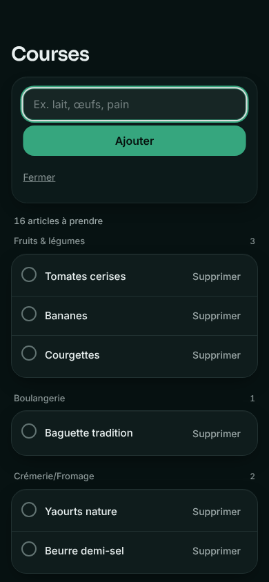
2. click role=button[name=/ajouter un article/i] — ok3. click champ vide — ok
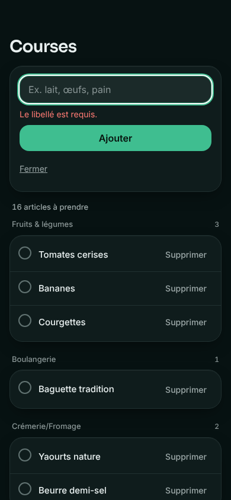
4. expect_text http://localhost:3102/courses — ok
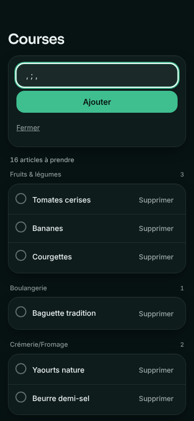
5. fill séparateurs seuls — ok6. press http://localhost:3102/courses — ok
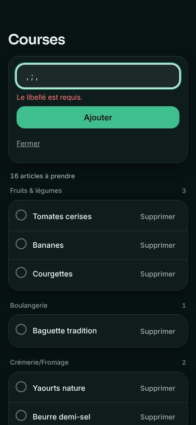
7. screenshot séparateurs seuls — ok8. fill segment de plus de 100 caractères — ok
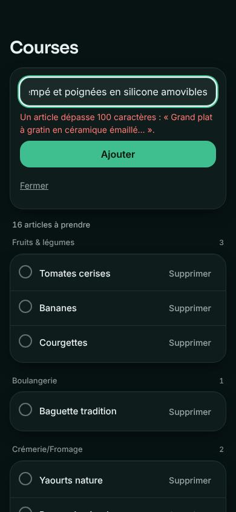
9. screenshot erreur longueur — ok
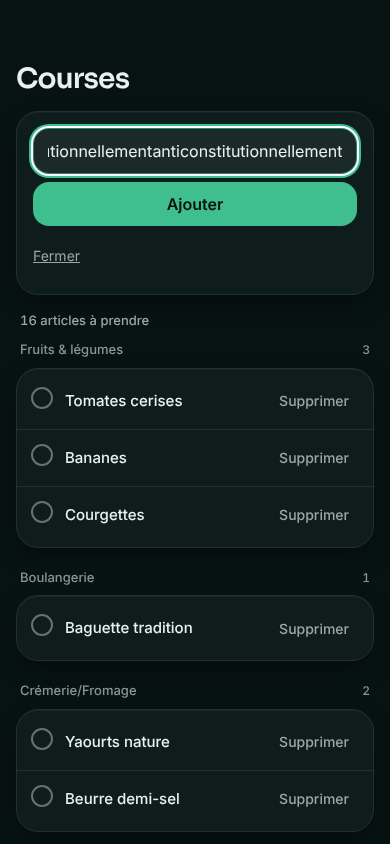
10. fill 100 caractères sans espace — ok11. press http://localhost:3102/courses — ok
13. fill doublon d'un article à prendre — ok14. press http://localhost:3102/courses — ok
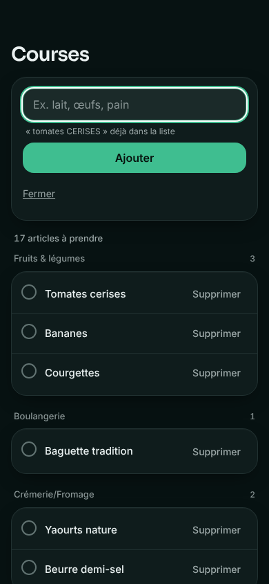
15. wait http://localhost:3102/courses — ok16. expect_text http://localhost:3102/courses — ok
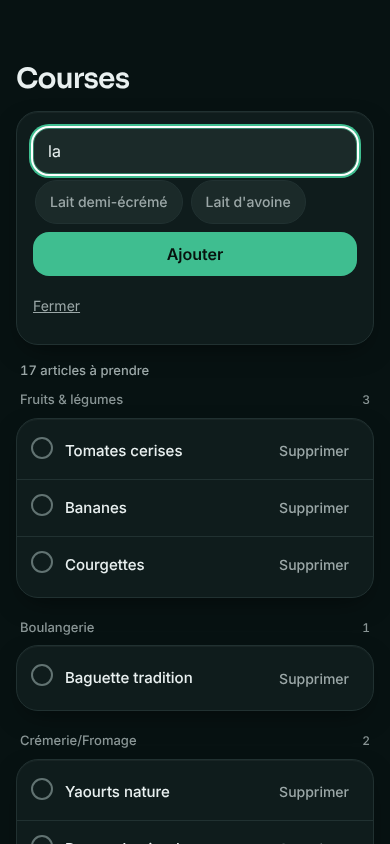
17. fill suggestions d'habituels — ok18. screenshot suggestions — ok19. click remettre un article pris — ok20. wait http://localhost:3102/courses — anomalie ⚠ requête échouée : POST http://localhost:3102/courses (net::ERR_ABORTED)21. expect_text http://localhost:3102/courses — ok
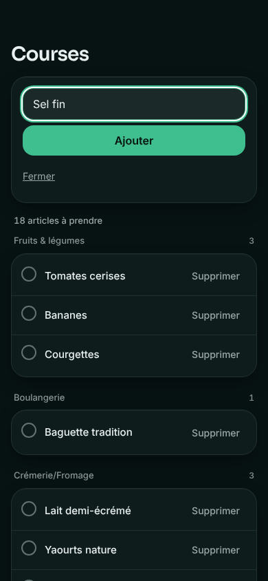
22. fill role=combobox — ok23. dblclick double clic sur Ajouter — ok
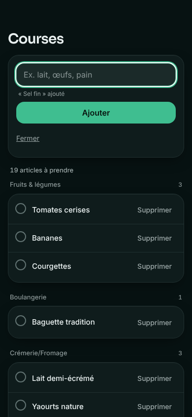
24. wait http://localhost:3102/courses — anomalie ⚠ requête échouée : POST http://localhost:3102/courses (net::ERR_ABORTED)25. screenshot après double clic — ok
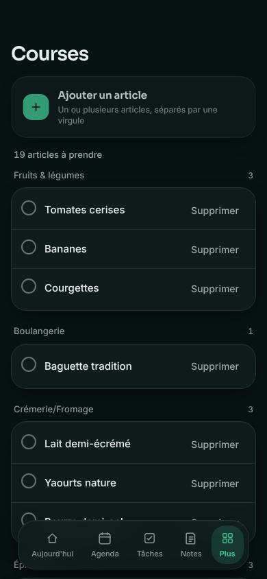
26. back retour arrière : ferme la carte — anomalie ⚠ requête échouée : GET http://localhost:3102/notes?_rsc=6kCI21yaTlYMipMB (net::ERR_ABORTED)
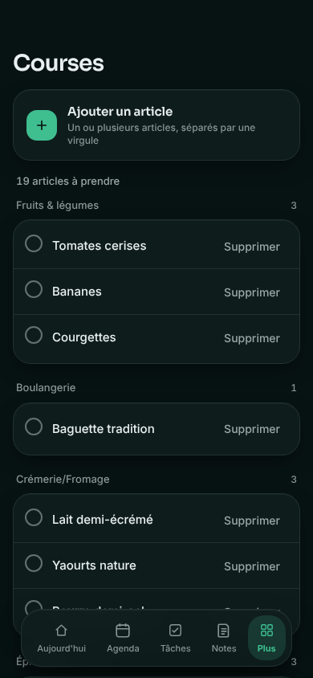
27. wait http://localhost:3102/courses — ok28. screenshot après retour — ok29. expect_text http://localhost:3102/courses — ok
06-renommer
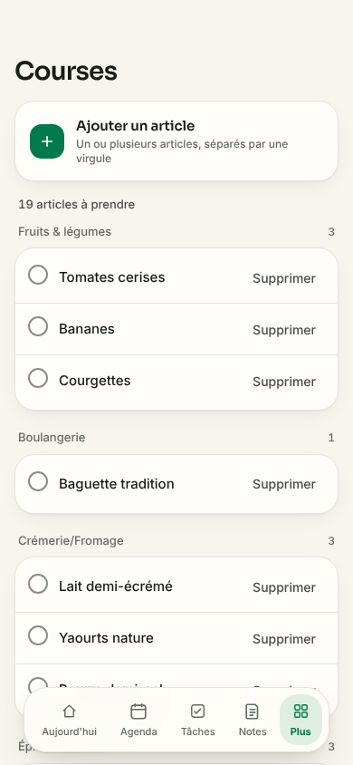
1. goto http://localhost:3102/courses — anomalie ⚠ HTTP 404 : GET http://localhost:3102/_vercel/speed-insights/script.js ⚠ console.error : Failed to load resource: the server responded with a status of 404 (Not Found) ⚠ console.error : Refused to execute script from 'http://localhost:3102/_vercel/speed-insights/script.js' because its MIME type ('text/plain') is not executable, and strict MIME type checking is enabled. ⚠ requête échouée : GET http://localhost:3102/_vercel/speed-insights/script.js (net::ERR_ABORTED) ⚠ requête échouée : GET http://localhost:3102/notes?_rsc=6kCI21yaTlYMipMB (net::ERR_ABORTED) ⚠ requête échouée : GET http://localhost:3102/nutrition?_rsc=oyVt-Ax8zMpCuAam (net::ERR_ABORTED)
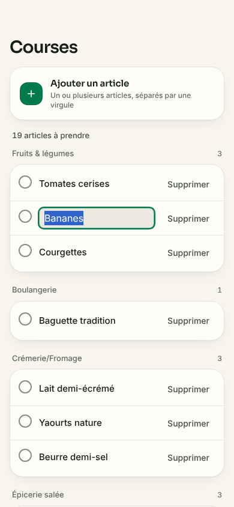
2. click renommer — ok
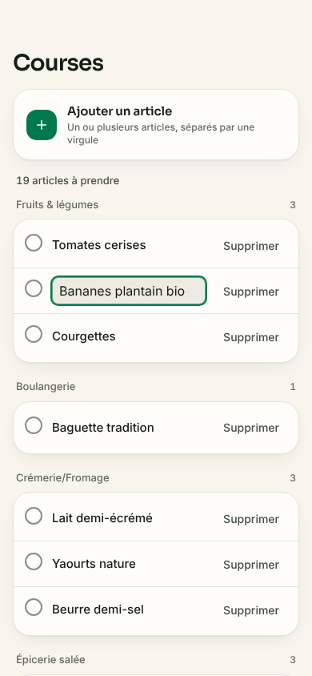
3. fill role=textbox[name=/Renommer/] — ok
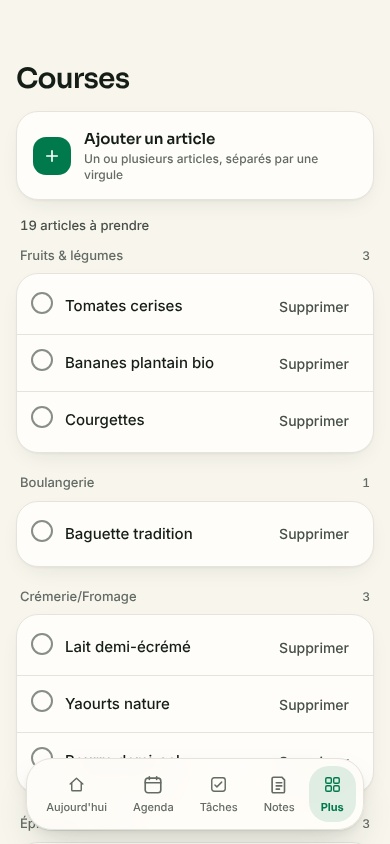
4. press http://localhost:3102/courses — ok
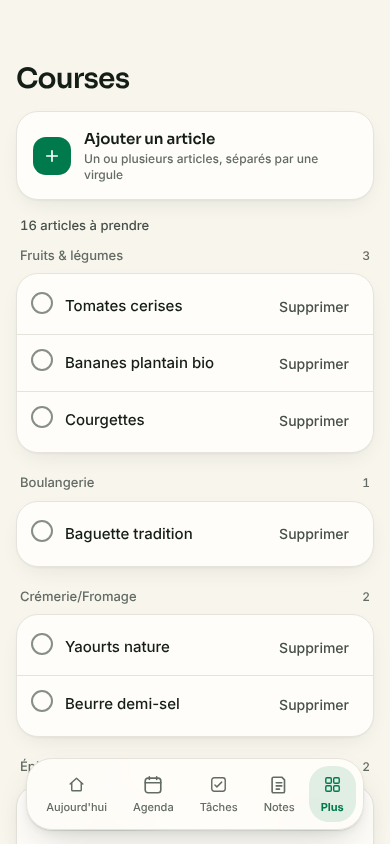
5. wait http://localhost:3102/courses — anomalie ⚠ requête échouée : GET http://localhost:3102/notes?_rsc=gFW0MxFV8ywPcvsL (net::ERR_ABORTED) ⚠ requête échouée : POST http://localhost:3102/courses (net::ERR_ABORTED) ⚠ requête échouée : POST http://localhost:3102/courses (net::ERR_ABORTED)6. expect_text http://localhost:3102/courses — ok
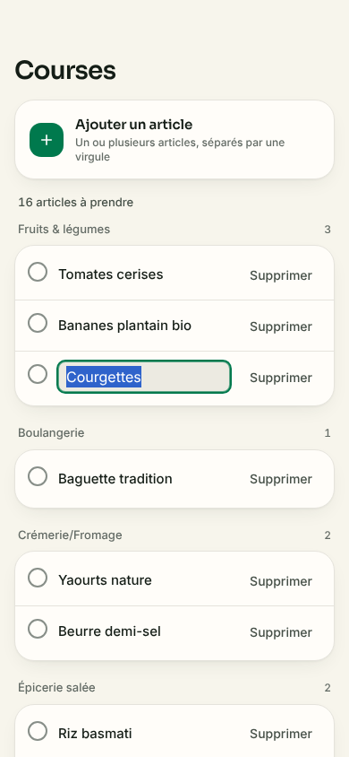
7. click role=button[name=/^Renommer « Courgettes »$/] — ok
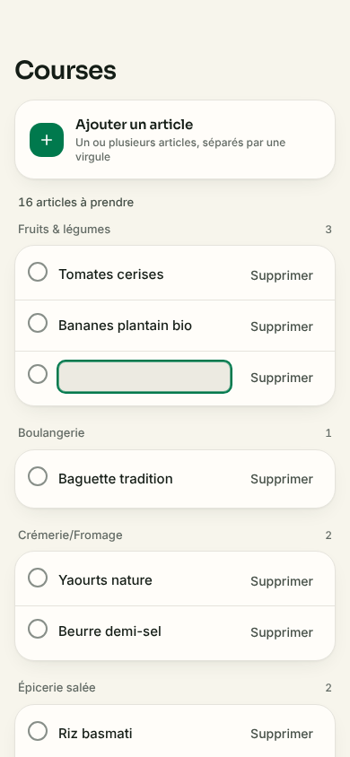
8. fill renommage vide — ok9. press http://localhost:3102/courses — ok10. wait http://localhost:3102/courses — ok11. expect_text http://localhost:3102/courses — ok12. click role=button[name=/^Renommer « Courgettes »$/] — ok
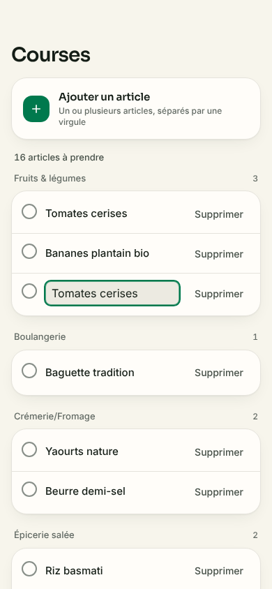
13. fill renommer vers un libellé déjà présent — ok14. press http://localhost:3102/courses — ok15. wait http://localhost:3102/courses — anomalie ⚠ requête échouée : GET http://localhost:3102/notes?_rsc=gFW0MxFV8ywPcvsL (net::ERR_ABORTED) ⚠ requête échouée : POST http://localhost:3102/courses (net::ERR_ABORTED) ⚠ requête échouée : POST http://localhost:3102/courses (net::ERR_ABORTED)16. screenshot deux « Tomates cerises » ? — ok
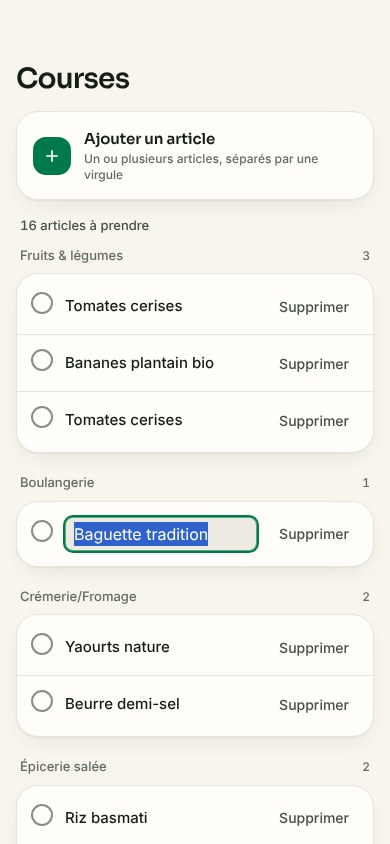
17. click role=button[name=/^Renommer « Baguette tradition »$/] — ok
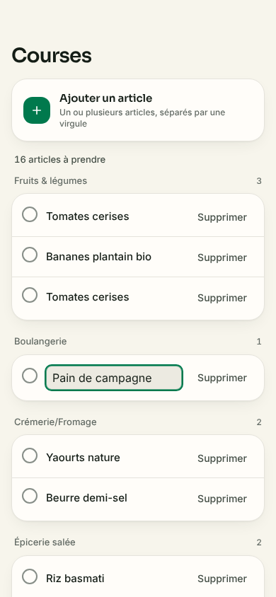
18. fill role=textbox[name=/Renommer/] — ok19. press Échap annule — ok20. wait http://localhost:3102/courses — ok21. expect_text http://localhost:3102/courses — ok22. reload http://localhost:3102/courses — anomalie ⚠ HTTP 404 : GET http://localhost:3102/_vercel/speed-insights/script.js ⚠ console.error : Failed to load resource: the server responded with a status of 404 (Not Found) ⚠ console.error : Refused to execute script from 'http://localhost:3102/_vercel/speed-insights/script.js' because its MIME type ('text/html') is not executable, and strict MIME type checking is enabled. ⚠ requête échouée : GET http://localhost:3102/_vercel/speed-insights/script.js (net::ERR_ABORTED) ⚠ requête échouée : GET http://localhost:3102/notes?_rsc=6kCI21yaTlYMipMB (net::ERR_ABORTED) ⚠ requête échouée : GET http://localhost:3102/nutrition?_rsc=oyVt-Ax8zMpCuAam (net::ERR_ABORTED)23. expect_text http://localhost:3102/courses — ok24. screenshot état final — ok
07-liste-vide
1. goto liste vide — anomalie ⚠ HTTP 404 : GET http://localhost:3102/_vercel/speed-insights/script.js ⚠ console.error : Failed to load resource: the server responded with a status of 404 (Not Found) ⚠ console.error : Refused to execute script from 'http://localhost:3102/_vercel/speed-insights/script.js' because its MIME type ('text/plain') is not executable, and strict MIME type checking is enabled. ⚠ requête échouée : GET http://localhost:3102/_vercel/speed-insights/script.js (net::ERR_ABORTED) ⚠ requête échouée : GET http://localhost:3102/notes?_rsc=6kCI21yaTlYMipMB (net::ERR_ABORTED) ⚠ requête échouée : GET http://localhost:3102/nutrition?_rsc=oyVt-Ax8zMpCuAam (net::ERR_ABORTED)2. wait http://localhost:3102/courses — ok3. reload second chargement (cache serveur) — anomalie ⚠ HTTP 404 : GET http://localhost:3102/_vercel/speed-insights/script.js ⚠ console.error : Failed to load resource: the server responded with a status of 404 (Not Found) ⚠ console.error : Refused to execute script from 'http://localhost:3102/_vercel/speed-insights/script.js' because its MIME type ('text/html') is not executable, and strict MIME type checking is enabled. ⚠ requête échouée : GET http://localhost:3102/_vercel/speed-insights/script.js (net::ERR_ABORTED) ⚠ requête échouée : GET http://localhost:3102/notes?_rsc=6kCI21yaTlYMipMB (net::ERR_ABORTED)4. expect_text http://localhost:3102/courses — ok5. click role=button[name=/ajouter un article/i] — ok6. fill deux articles dont un mot de 100 caractères — ok7. press http://localhost:3102/courses — ok8. wait http://localhost:3102/courses — anomalie ⚠ requête échouée : POST http://localhost:3102/courses (net::ERR_ABORTED) ⚠ requête échouée : POST http://localhost:3102/courses (net::ERR_ABORTED)9. click role=button[name=/^Fermer$/] — anomalie ⚠ requête échouée : GET http://localhost:3102/notes?_rsc=6kCI21yaTlYMipMB (net::ERR_ABORTED)10. wait http://localhost:3102/courses — ok11. screenshot mot de 100 caractères sans espace — ok12. click cocher — ok13. wait http://localhost:3102/courses — anomalie ⚠ requête échouée : GET http://localhost:3102/notes?_rsc=gFW0MxFV8ywPcvsL (net::ERR_ABORTED) ⚠ requête échouée : POST http://localhost:3102/courses (net::ERR_ABORTED)14. click cocher le dernier article — ok15. wait http://localhost:3102/courses — anomalie ⚠ requête échouée : GET http://localhost:3102/notes?_rsc=gFW0MxFV8ywPcvsL (net::ERR_ABORTED) ⚠ requête échouée : POST http://localhost:3102/courses (net::ERR_ABORTED)16. expect_text http://localhost:3102/courses — ok17. click role=button[name=/^Articles pris/] — ok18. wait http://localhost:3102/courses — ok19. screenshot articles pris dépliés, mot long barré — ok20. click role=button[name=/^Supprimer les articles pris$/] — ok21. wait http://localhost:3102/courses — anomalie ⚠ requête échouée : GET http://localhost:3102/notes?_rsc=gFW0MxFV8ywPcvsL (net::ERR_ABORTED) ⚠ requête échouée : POST http://localhost:3102/courses (net::ERR_ABORTED)22. screenshot retour à l'état vide + toast — ok23. wait http://localhost:3102/courses — ok24. reload http://localhost:3102/courses — anomalie ⚠ HTTP 404 : GET http://localhost:3102/_vercel/speed-insights/script.js ⚠ console.error : Failed to load resource: the server responded with a status of 404 (Not Found) ⚠ console.error : Refused to execute script from 'http://localhost:3102/_vercel/speed-insights/script.js' because its MIME type ('text/html') is not executable, and strict MIME type checking is enabled. ⚠ requête échouée : GET http://localhost:3102/_vercel/speed-insights/script.js (net::ERR_ABORTED) ⚠ requête échouée : GET http://localhost:3102/notes?_rsc=6kCI21yaTlYMipMB (net::ERR_ABORTED) ⚠ requête échouée : GET http://localhost:3102/nutrition?_rsc=oyVt-Ax8zMpCuAam (net::ERR_ABORTED)25. expect_text http://localhost:3102/courses — ok